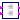
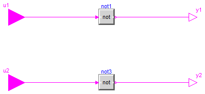

For all models in this package an FMU must be generated
Extends from Modelica.Icons.Package (Icon for standard packages).
| Name | Description |
|---|---|
|  ParallelNot1 | |
| ParallelNot2 |

Extends from Modelica.Blocks.Interfaces.BlockIcon (Basic graphical layout of input/output block).
| Type | Name | Description |
|---|---|---|
| input BooleanInput | u1 | Connector of Boolean input signal |
| input BooleanInput | u2 | Connector of Boolean input signal |
| output BooleanOutput | y1 | Connector of Boolean output signal |
| output BooleanOutput | y2 | Connector of Boolean output signal |
Extends from Modelica.Blocks.Interfaces.BlockIcon (Basic graphical layout of input/output block).
| Type | Name | Description |
|---|---|---|
| input BooleanInput | u1 | Connector of Boolean input signal |
| input BooleanInput | u2 | Connector of Boolean input signal |
| output BooleanOutput | y1 | Connector of Boolean output signal |
| output BooleanOutput | y2 | Connector of Boolean output signal |